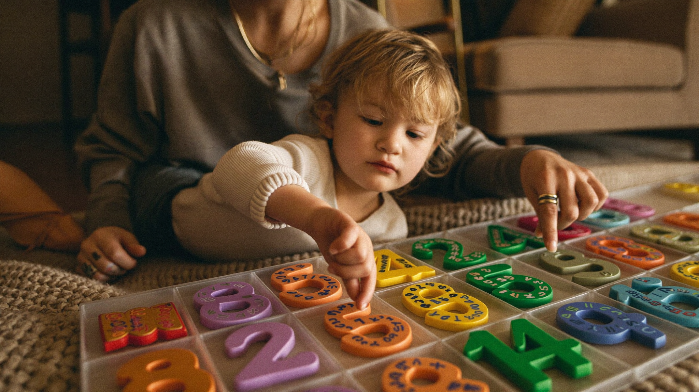

What Is Number Sense and Why Does It Matter Before Kindergarten?
By Leslie Dykstra · Certified Early Childhood Specialist · Williamson County, TN

If you've heard the term "number sense" and wondered what educators actually mean by it, you're not alone. Parents ask me about it often, and I love the question. Number sense for kindergarten is one of those things that looks simple on the surface — but what's happening underneath matters enormously for how a child handles math for years to come.
As a certified early childhood specialist serving families across Williamson County, I work with little ones ages 3–8, and I can tell you firsthand: children who arrive at kindergarten with strong number sense tend to feel confident in math from day one. Children who don't can struggle even when they can count to 20 without missing a beat.
What is number sense, exactly?
Number sense is a child's ability to understand numbers in a flexible, meaningful way. It includes things like:
- Knowing that "five" means a group of five things — no matter the arrangement
- Understanding that seven is more than four, and feeling that difference rather than just reciting it
- Grasping that you can break apart six into three and three, or four and two
- Starting to compare, estimate, and reason: "I have more crackers than you do"
It's the difference between a child who knows the word "eight" and a child who understands that eight is a lot, that it's almost ten, and that it's two groups of four.
You can read more about how early math connects to literacy and overall readiness in the post on early math skills before kindergarten.
Why does number sense matter more than counting?
A child who can count to 100 may still have weak number sense. Counting in order is a memory task. Number sense is a thinking task.
When a child with strong number sense hears "Can you give me five blocks?" they think about fiveness — and they get it right even if they have to recount. A child with only rote counting may recite the sequence perfectly but hand over a random handful.
In kindergarten and beyond, teachers build on number sense every single day. Addition, subtraction, place value, word problems — all of it requires a child to understand what numbers mean, not just what they sound like.
When does number sense develop?
It starts earlier than most parents expect.
Toddlers begin comparing quantities: "more" vs. "less," "a lot" vs. "a little." Between ages 3 and 5, children build on that to understand counting means something real — that each number matches one object. By ages 5–6, they're ready to start noticing patterns and breaking numbers apart mentally.
This is exactly the window where everyday play makes a difference. Sorting toys. Sharing snacks fairly. Building towers and counting as they go. None of these feel like math lessons, but they absolutely are — and there are plenty more like them in our roundup of everyday math activities you can fold into ordinary routines.
How can I build number sense at home?
You don't need a curriculum. A few ideas that work well:
Count real things, not just words. Touch each grape as you count them. Point to each step as you climb them together. The one-to-one match is what makes counting click.
Play with small quantities. "How many crackers are on your plate? Can you put them in two equal groups?" Small, manageable numbers teach more than drilling to 100.
Talk about "how many" naturally. At dinner, at the grocery store, in the bathtub. "We have four cups. If I take one away, how many are left?"
Use pattern blocks, puzzles, and loose parts. Hands-on materials let children feel quantity before they can abstract it. These tools are a big reason I love them in sessions — they make number sense visible.
If you'd like to know whether your child's early math skills are on track, a personalized assessment can give you a clear picture. And our programs for ages 3–8 are built around exactly this kind of foundational thinking.
Frequently asked questions
My child can count to 30. Doesn't that mean they have number sense?
Counting in sequence is a great skill, but it's separate from number sense. The question is whether your child understands what those numbers represent. Try asking "give me eight raisins" without letting them count from one. That answer tells you more than recitation does.
At what age should I start worrying about number sense?
If your 5- or 6-year-old still can't tell you which pile has more without counting every single item, it's worth paying attention to. Many children just need more hands-on practice. A few sessions with someone who knows early math development can make a real difference.
Is number sense the same as being "good at math"?
Not exactly. Number sense is the foundation of being good at math. A child can be naturally quick at computation but still lack flexibility. Number sense is about understanding numbers, not just calculating with them.
Want to know where your child stands?
Grab the free Kindergarten Readiness Checklist to see how your child is developing across all five readiness areas, including early math. Or book a free 15-minute conversation with Leslie — she'd love to help.
Little Minds, Big Futures — where every child's potential takes flight.